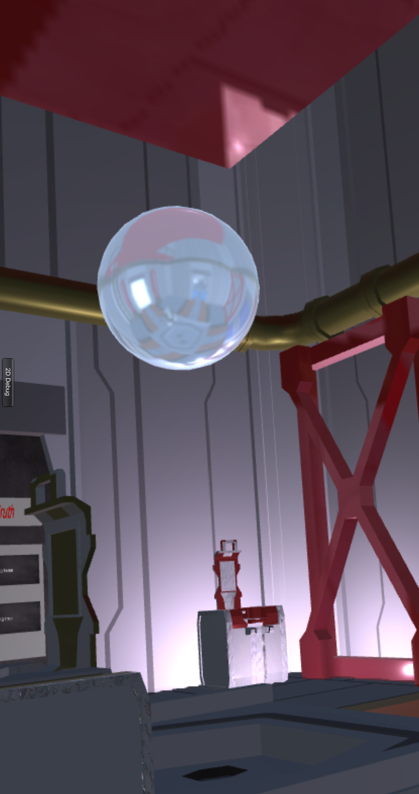

S.P.I.E.S.
Sneaky People In Extreme SituationsOverview
GamePlay:
The Operator helps the Spy navigate through rooms quickly until the Spy finds hard drive and then gets the Spy back out safely without getting caught. The doors between rooms are locked and various tasks or puzzles must be completed to unlock them. Only the Spy can see the doors and only the Operator has access to the manual for opening the doors. The Spy is in a VR headset, while the Operator is on a computer screen, preferably a large one. When we designed this for our class, the Operator was on a tile display wall to give it more of a sci-fi feel.The Spy:
The Spy is placed in a virtual enemy world. He/she relays information about their world to the operator and follows operator instructions to open doors and navigate throughout the building. They must also avoid hazards like the alien Kirin guards.The Operator:
The Operator has access to all the information needed for the Spy to solve puzzles. In addition, they have an x-ray view of the entire enemy building. They can also close doors and access additional information using their console. The operator cannot see guards or other details about the Spy's world other than their position.*The Operator has the option to use a 3D view on a CyberCANOE
My Responsibilities

My official responsibilities for this game were "Game Master" and Spy UI. Basically, I
created the VR environment for the Spy and all the puzzles/games for the doors.
The environment was inspired by the movie "Cube" in that the rooms are connected together to form a cube and there are doors to move between rooms on all four sides as well as the ceiling and floor. Since part of the game is that the Spy needs the Operator's help to navigate, the rooms are all exactly the same and fit together modularly. This was I was able to randomize the rotation of each room on the map. I also randomized the color theme of each room so they look at least slightly different. Between the colors and rotation, it should feel like you are getting a new environment every time you play the game. I used a SNAPS asset package from the Unity Asset store for most of the environment GameObjects and created my own materials.
The majority of my time was spent creating and coding the door puzzles. This portion was a lot of fun. We brainstormed ideas for the puzzles as a group and I was able to implement four of the puzzles in the time frame of the semester:
The process of creating the logic and implementing the code for the puzzles was rather long and a steep learning curve for me using a new language. As I worked through the puzzles, the process that I found the most effective for creating these puzzles was to:
In addition to coding the puzzles, I helped create the manual and resources the Operator uses to figure out the puzzles. This didn't require any coding since I designed it entirely in Canva. Working out the logic was still a lot of fun though and trying to find a good level of difficulty proved to be more difficult than I thought. I enlisted the help of various coworker and friends to review the materials I made to make sure they made sense. In the end, our game still has a bit of a learning curve, like "Keep Talking and Won't Explode," and while it is not for the feint of heart, I think it's fun to play.
The environment was inspired by the movie "Cube" in that the rooms are connected together to form a cube and there are doors to move between rooms on all four sides as well as the ceiling and floor. Since part of the game is that the Spy needs the Operator's help to navigate, the rooms are all exactly the same and fit together modularly. This was I was able to randomize the rotation of each room on the map. I also randomized the color theme of each room so they look at least slightly different. Between the colors and rotation, it should feel like you are getting a new environment every time you play the game. I used a SNAPS asset package from the Unity Asset store for most of the environment GameObjects and created my own materials.
The majority of my time was spent creating and coding the door puzzles. This portion was a lot of fun. We brainstormed ideas for the puzzles as a group and I was able to implement four of the puzzles in the time frame of the semester:
- What's the Password?
- Truth or Lie
- Switch On Switch Off
- Clever Levers
The process of creating the logic and implementing the code for the puzzles was rather long and a steep learning curve for me using a new language. As I worked through the puzzles, the process that I found the most effective for creating these puzzles was to:
- Outline the parameters of the puzzle
- Sketch out psuedo code algorithm
- Code & test sections of algorithm separately
- Combine all code and test in environment
In addition to coding the puzzles, I helped create the manual and resources the Operator uses to figure out the puzzles. This didn't require any coding since I designed it entirely in Canva. Working out the logic was still a lot of fun though and trying to find a good level of difficulty proved to be more difficult than I thought. I enlisted the help of various coworker and friends to review the materials I made to make sure they made sense. In the end, our game still has a bit of a learning curve, like "Keep Talking and Won't Explode," and while it is not for the feint of heart, I think it's fun to play.
Reflection
I was fortunate to work with two teammates who already knew a lot about Unity and could help me learn really quickly.
I went from creating a cube I could move with my arrow keys to creating a world of rooms
with puzzles that open doors. It was quite an experience. I have always loved being creative and this provided me a great creative outlet.
I overcame lots of coding logic challenges and learned about the rendering capabilities (and limitations) when it comes to lighting.
Spoiler Alert: real-time light calculations are expensive! But more than anything, I had FUN and while increasing my coding language repertoire.